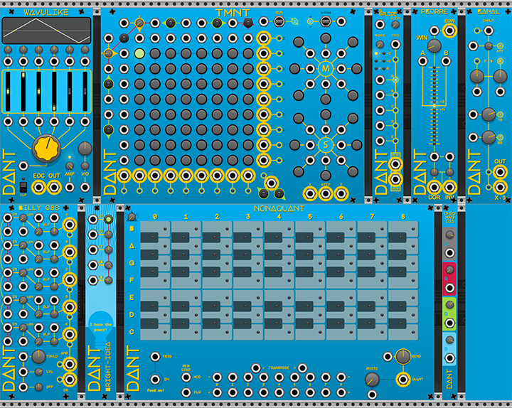

VCV Rack 2, the virtual Eurorack studio.
DanTModules is a VCV Rack 2 plugin by DANT
The plugin has a Manual website where you can also raise issues if you encounter any bugs, or contribute to the documentation if are such an awesome person.
You could also ask questions about DanTModules or generally discuss the plugin and VCV Rack on the Community forums and in the VCV Discord server.